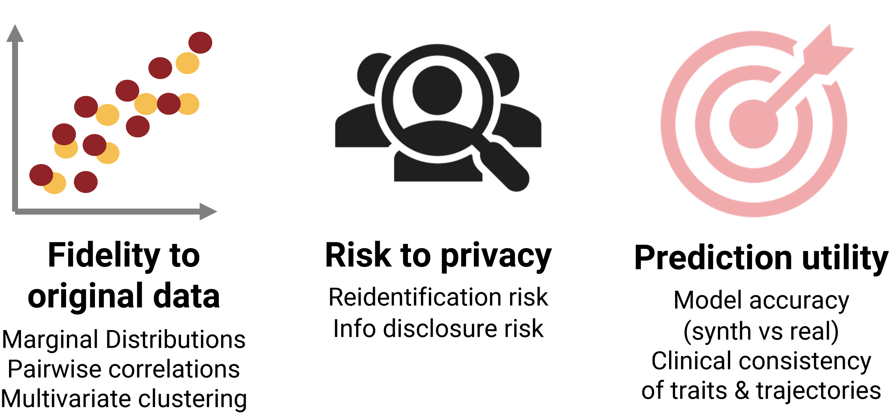

Synthetic data
progress and challenges
Defining synthetic data
It is necessary to clarify what we mean when we refer to synthetic data within the Sandbox project. While the term has been used for decades to describe all kinds of ‘non-real’ data including those derived from models and simulations, developments in deep generative modeling have dramatically expanded our understanding of what synthetic data can be. In the age of deepfakes and news articles written entirely by ChatGPT, synthetic data derived from deep learning is in a wholly different class from data simulated with a mechanistic or agent-based model.
The Sandbox is actually interested in any form of synthetic data - our highest priority is providing safe-to-use data to trainees and researchers that does not raise any concerns about sensitive data with respect to the EU’s General Data Protection Regulation (GDPR) and local Danish data regulations. So, we are using both old school and new school forms of data synthesis. However, the discussion on this page is heavily weighted towards our interest in new school synthesis - with our connections to generative modeling researchers and high quality data, we are naturally interested in figuring out a safe way to deploy synthetic datasets derived from deep learning and other high similarity approaches.
- The development of synthetic datasets should be viewed as a research project. The technology is generally untested with few examples of public roll-out, and its deployment should be future-proofed as much as possible against attacks and potential sensitive data disclosure.
- Synthetic data generation and evaluation approaches should be tailored to each dataset of interest. With current technology, it is unlikely that high quality, safe-to-share datasets will be produced at any kind of production scale without a massive effort devoted to pre-processing, data harmonization, and customized routines for different families of datasets.
- The Sandbox is not openly sharing any synthetic datasets generated from person-specific sensitive data. We think these datasets will be useful to approved researchers that ideally gain access via an approved data portal with registration and data use agreements with relevant data authorities. We are not currently that portal.Generating synthetic data
We have explored the performance of copulas, multiple imputation, sequential synthesis, and several generative adversarial network (GAN) approaches with a cancer dataset which we were developing for a course in the MS in Personal Medicine program at University of Copenhagen. We quickly discovered that factors such as missingness, collinearity, and the ratio of patients to features cause just as many problems for synthetic data generation as they do in predictive modeling. We are currently evaluating the above techniques as well as additional deep learning approaches such as variational autoencoders (VAEs) and Bayesian graphs against a collection of benchmark health datasets to better understand the positives and negatives of each technique when faced with common challenges in real world health data.
Recently, a few interesting libraries / pipelines have been released that enable testing of different synthetic data generation approaches alongside a range of evaluation metrics. We are actively exploring these tools as we test different generation approaches and examining their implementation of evaluation metrics. We plan to add additional components and features as we resolve challenges with different target datasets.
Evaluating synthetic data
There are 3 key principles to consider when judging the overall quality of a synthetic dataset: fidelity to the original dataset, risk to privacy, and prediction utility. Fidelity and utility are often grouped together as similarity to the original data which exists in a trade-off with privacy - the more similar your synthetic dataset to the original, the higher your risk to patient privacy. However, the distinction between them is important as they can be achieved independently of each other depending on the project frame. Fidelity refers to reproduction of the multivariate shape and structure of the original data (including complex nonlinear relationships) while utility refers to how well the synthetic dataset matches the predictive accuracy of the original dataset. Risk to privacy includes both risk of patient reidentification and risk of sensitive information disclosure about a patient. There are many proposed evaluation metrics for measuring different aspects of these three qualities. We are actively investigating the performance of these metrics against our different datasets.

We should point out that while using quantitative metrics to assess privacy preservation is a critical step in creating a synthetic dataset, positive results do not absolve us from any concerns regarding risk to privacy in the synthetic data. Regulatory guidelines regarding the safety of synthetic data and the ability to openly share it are extremely unclear. No authorities have specified quantitative cut-offs using these metrics that enable open release, for example. For this reason, we have developed our own internal guidelines for how to handle this aspect of the project, which are based on a comprehensive examination of relevant EU and Danish legislation (i.e. the GDPR, the Artificial Intelligence Act, the Danish Health Law, and the Danish Data Protection Act). We continue work on synthesis with hope that new legislation such as the development of the European Health Data Space will provide further guidance in the future.
Rules for synthetic data in the Sandbox
We are currently focused on exploring methods and metrics by developing reproducible, well documented examples and use cases of synthetic data in partnership with other researchers, legal advisors, and data authorities. We’re relying primarily on publicly available tabular health datasets in this exploration phase, but we will also work with sensitive data in the future. Our rules aim to preserve the trust of the public in how their health data is handled by data authorities and researchers.
1. Creation of synthetic data involves processing sensitive data, and this requires obtaining project approvals from data authorities when performing this work on sensitive data. Any synthetic data work with restricted-access, sensitive data by the Sandbox will only be conducted with these approvals in place in the frame of a research project.
2. Goals for each synthetic dataset project should be defined at project initiation: how will the synthetic dataset be used, who is the intended audience, and how might it be shared? This frame should govern every consequent decision for that dataset and be shared alongside the final dataset.
3. Quantitative metrics for fidelity, utility, and privacy preservation should be implemented for each dataset and shared alongside the final dataset.
4. A cost-benefit analysis should be performed after the project is completed - is any risk to privacy appropriately balanced by value of the dataset in achieving its stated aims and contributing to the public good?
5. Data authorities with ethical and strategic stakes in who accesses the synthetic dataset should be included in decisions about how it is used and who is allowed to access it.
6. Synthetic datasets created from person-specific sensitive data rather than population characteristics can still pose privacy risks, and any users of the dataset should be approved and registered. The Sandbox will not release any such datasets publicly and will instead work with appropriate data authorities to decide how such datasets should be governed in a responsible way.